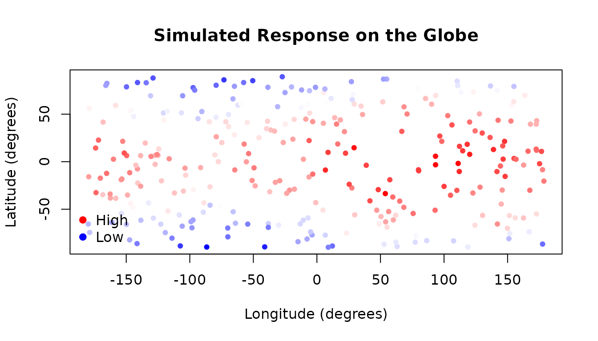
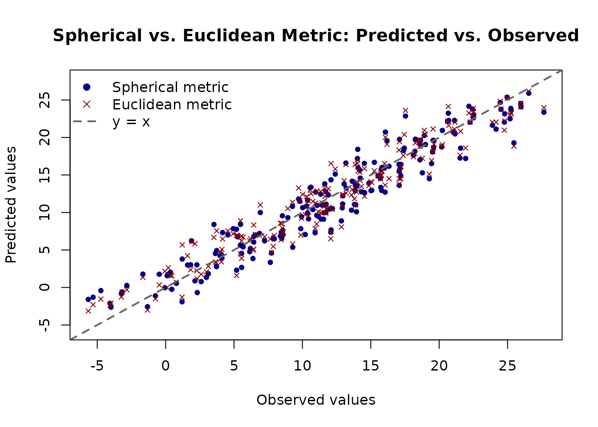

Modelling Spherical Data with AddiVortes
Andy Iskauskas and John Paul Gosling
2026-03-23
Source:vignettes/spherical.Rmd
spherical.RmdThis vignette demonstrates how to use AddiVortes with
spherical data, such as measurements taken at
geographic locations on the surface of a globe. Spherical data requires
a specialised distance measure because the usual Euclidean distance does
not respect the geometry of a curved surface — in particular it does not
handle the wrap-around at the poles and the date line correctly.
1. What is Spherical Data?
Spherical data are observations whose locations lie on the surface of a sphere. A familiar example is geographic data specified by latitude and longitude. Two important properties make this different from ordinary planar data:
- Wrap-around: Longitude values near −180° and +180° are actually very close to each other on the globe, but their Euclidean distance is large. A good distance metric must recognise this.
- Curvature: Distances should follow great-circle arcs (the shortest path along the sphere’s surface) rather than straight lines.
AddiVortes uses the great-circle
distance (also known as the geodesic distance or the
haversine-type formula) when metric = "S" is specified.
This ensures that points near the poles and near the date line are
treated as neighbours when they are genuinely close on the sphere.
2. Coordinate Convention
AddiVortes expects spherical coordinates in
radians, following this convention:
- Latitude-type dimensions (all spherical dimensions except the last): values in [−π/2, π/2].
- Longitude / azimuthal dimension (the last spherical column): values in [−π, π].
For a single-surface model (a globe), you need exactly two columns:
x <- cbind(latitude_rad, longitude_rad)with metric = "S". The model will use the spherical
(great-circle) distance between all pairs of tessellation centres and
observations.
If your data combine spherical and non-spherical covariates, you can
pass a vector of metric indicators,
e.g. metric = c(1, 1, 0) for two spherical dimensions
followed by one Euclidean dimension.
3. Generating Synthetic Spherical Data
We simulate a dataset of 300 observations distributed across the surface of a globe. Each observation has a latitude and a longitude, and the response variable represents a smoothly varying quantity — here, a synthetic “temperature” that is warmest at the equator and varies with longitude.
library(AddiVortes)
set.seed(42)
n <- 300
# Sample random locations on the globe
lat <- runif(n, -pi / 2, pi / 2) # latitude in radians: [-pi/2, pi/2]
lon <- runif(n, -pi, pi) # longitude in radians: [-pi, pi]
# True function: warmer at the equator, slight east-west gradient
y_true <- 20 * cos(lat) + 5 * sin(lon)
# Add observation noise
y <- y_true + rnorm(n, sd = 2)
# Covariate matrix: latitude first, longitude last (required convention)
x <- cbind(lat, lon)The plot below shows the spatial distribution of the simulated response values:
# Colour scale for the response
cols <- colorRampPalette(c("blue", "white", "red"))(100)
col_index <- cut(y, breaks = 100, labels = FALSE)
# Convert radians to degrees for a readable plot
lat_deg <- lat * 180 / pi
lon_deg <- lon * 180 / pi
plot(lon_deg, lat_deg,
col = cols[col_index], pch = 19, cex = 0.7,
xlab = "Longitude (degrees)",
ylab = "Latitude (degrees)",
main = "Simulated Response on the Globe"
)
legend("bottomleft",
legend = c("High", "Low"),
col = c("red", "blue"),
pch = 19, bty = "n"
)
4. Fitting the Spherical Model
We fit AddiVortes with metric = "S" to tell
the model that both columns are spherical coordinates. The model will
then use great-circle distance when assigning observations to Voronoi
cells.
fit_sph <- AddiVortes(
y = y,
x = x,
m = 50,
totalMCMCIter = 500,
mcmcBurnIn = 100,
metric = "S", # use great-circle distance for all columns
showProgress = FALSE
)
cat("In-sample RMSE (spherical metric):", round(fit_sph$inSampleRmse, 3), "\n")
#> In-sample RMSE (spherical metric): 1.32For comparison, we fit an identical model using the default Euclidean metric. This model treats latitude and longitude as ordinary continuous variables and will not handle the wrap-around near ±π correctly.
fit_euc <- AddiVortes(
y = y,
x = x,
m = 50,
totalMCMCIter = 500,
mcmcBurnIn = 100,
metric = "E", # Euclidean distance (default)
showProgress = FALSE
)5. Out-of-Sample Evaluation
We generate a held-out test set and compare the two models. We also include a group of observations near the date line (longitude ≈ ±π) to highlight where the Euclidean metric is most likely to struggle.
set.seed(101)
n_test <- 200
lat_test <- runif(n_test, -pi / 2, pi / 2)
lon_test <- runif(n_test, -pi, pi)
y_true_test <- 20 * cos(lat_test) + 5 * sin(lon_test)
y_test <- y_true_test + rnorm(n_test, sd = 2)
x_test <- cbind(lat_test, lon_test)6. Visualising Predictions
The plot below shows predicted versus observed values for both models on the test set. A well-calibrated model should have points lying close to the diagonal.
y_range <- range(c(y_test, preds_sph, preds_euc))
plot(y_test, preds_sph,
pch = 19, col = "darkblue", cex = 0.7,
xlab = "Observed values",
ylab = "Predicted values",
main = "Spherical vs. Euclidean Metric: Predicted vs. Observed",
xlim = y_range, ylim = y_range
)
points(y_test, preds_euc, pch = 4, col = "darkred", cex = 0.7)
abline(0, 1, lwd = 2, lty = 2, col = "grey40")
legend("topleft",
legend = c("Spherical metric", "Euclidean metric", "y = x"),
col = c("darkblue", "darkred", "grey40"),
pch = c(19, 4, NA),
lty = c(NA, NA, 2),
lwd = c(NA, NA, 2),
bty = "n"
)
7. Summary of Key Points
- Set
metric = "S"(ormetric = "Spherical") to use the great-circle distance for all covariate columns. - For datasets that mix spherical and non-spherical covariates, pass a
vector of 0s and 1s, e.g.
metric = c(1, 1, 0)for two spherical dimensions and one Euclidean dimension. - Spherical coordinates must be in radians: latitude in [−π/2, π/2] and longitude in [−π, π].
- The last spherical column is treated as the azimuthal (longitude) dimension; all other spherical columns are treated as polar (latitude) dimensions.
- The great-circle distance correctly handles wrap-around, so points near longitude ±π are recognised as neighbours.